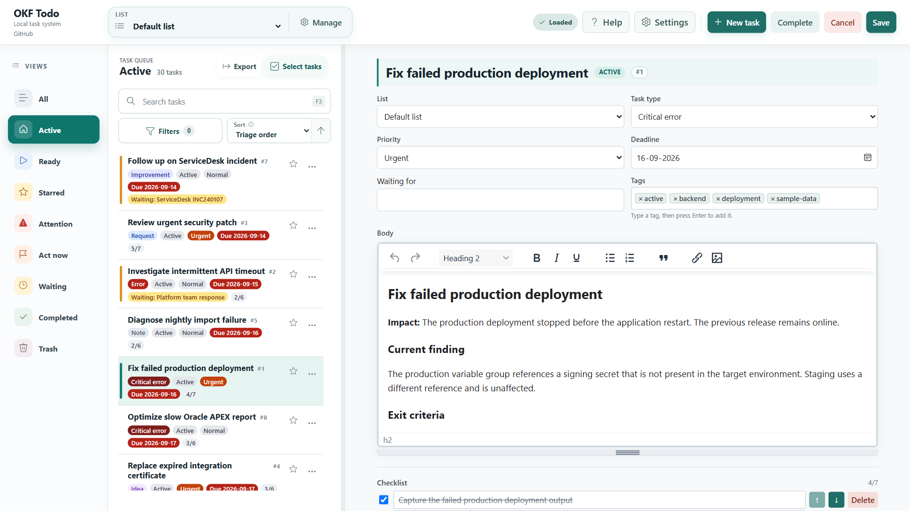
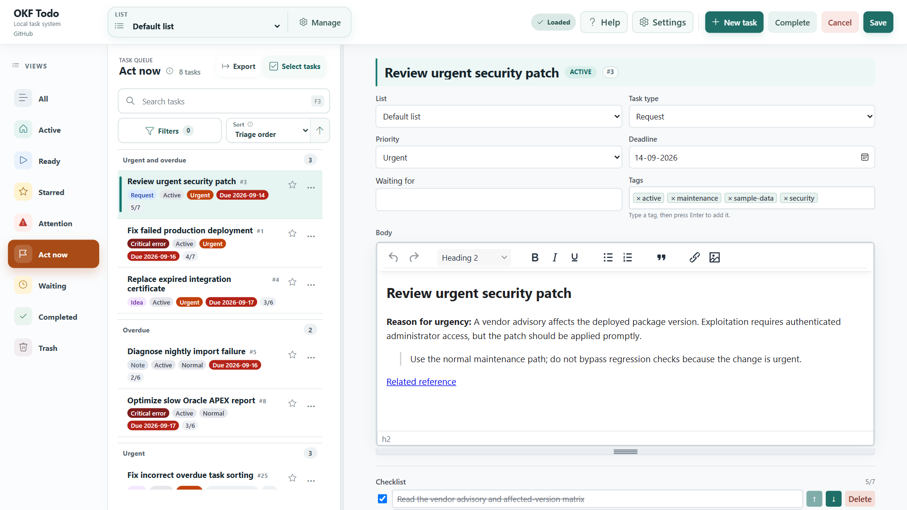
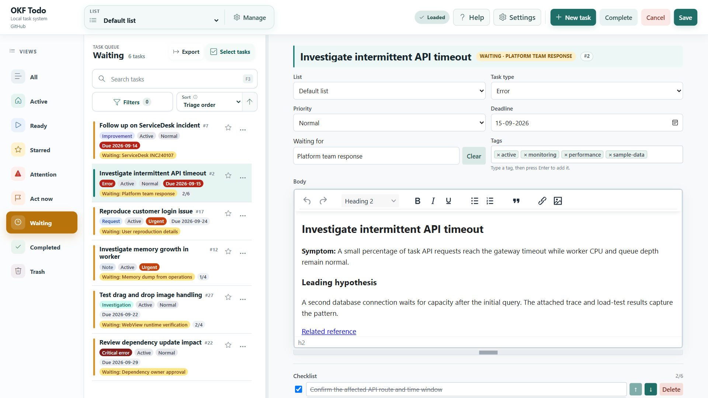
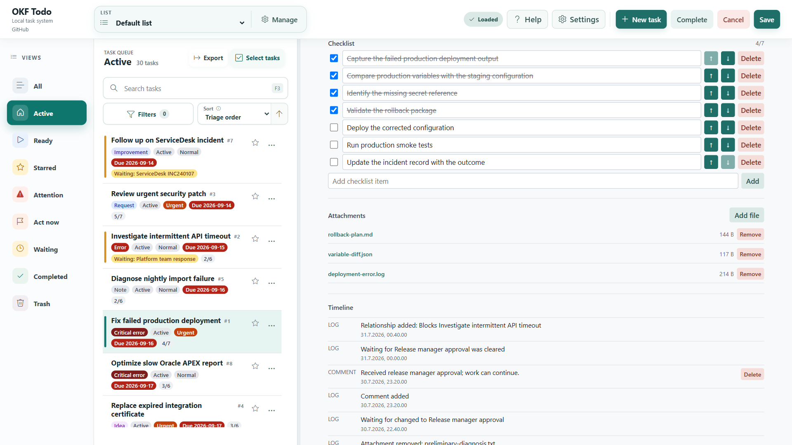
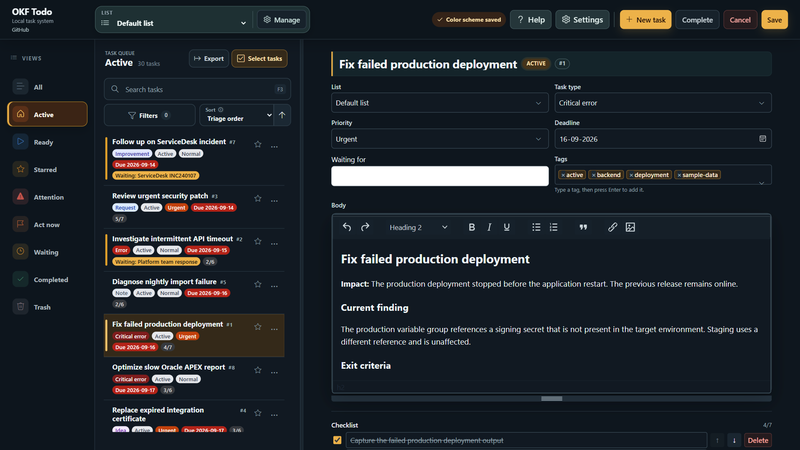
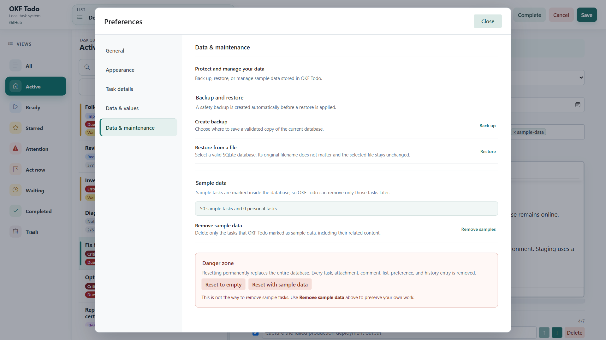

OKF Todo · Microsoft Store gallery
Six upload-ready screenshots · 1920 × 1080 · English captions · Click any image for full size.

1 / 6 Keep development and support work in one local workspace, with task notes, priorities, deadlines and tags. No online account required.

2 / 6 Focus on what needs action. Use Act now to find urgent and overdue work that is not waiting on someone else.

3 / 6 Keep follow-ups visible. See what is waiting, who or what you are waiting for, and the context behind each task.

4 / 6 Keep the evidence with the task. Track checklist progress, attach files and follow the history in the Timeline.

5 / 6 Choose a workspace that suits you. Switch between light and dark themes while keeping your task context close at hand.

6 / 6 Keep control of your local data. Create database backups and restore from a file, with a safety backup before restoration.Upload the numbered PNGs only. See README.md for order, captions and capture instructions.